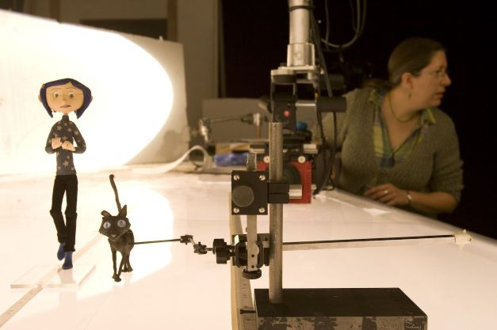

Coraline é um filme Stop-Motion,ou seja e feito apartir de bonecos que são movimentados a cada frame formando uma pequena animação. Então você sabe como esse filme foi feito?,as etapas? se não, continue neste site e acompanhe todo o processo desde os movimentos capturados por fotos, até o resultado final

Stop-Motion é uma técnica de animação,aonde são usados bonecos de vários materiais,são usados máquinas fotográficas ou até computadores para serem feitos a animação. Para cada movimento são tiradas 24 fotos,ou seja,um frame 24 fotos ao total seriam 600 fotos a mais dos artistas.
Coraline e feito por stop-motion,a personagem em si teve vários modelos desenhados de várias formas até chegar na sua forma perfeita. A primeira etapa da criação do Filme foi a dublagem. O Filme Coraline deve a sua dublagem gravada parado logo fazerem a animação,Henry Selick queria que os animadores tivessem mais feito doque iria sair,com a dublagem feita seria mais solto fazer a animação. A segunda etapa foi a animação e gravação Filmagem do filme,com o Stop-Motion cada detalhe era possível também,um segundo de animação seriam 24 frames.
